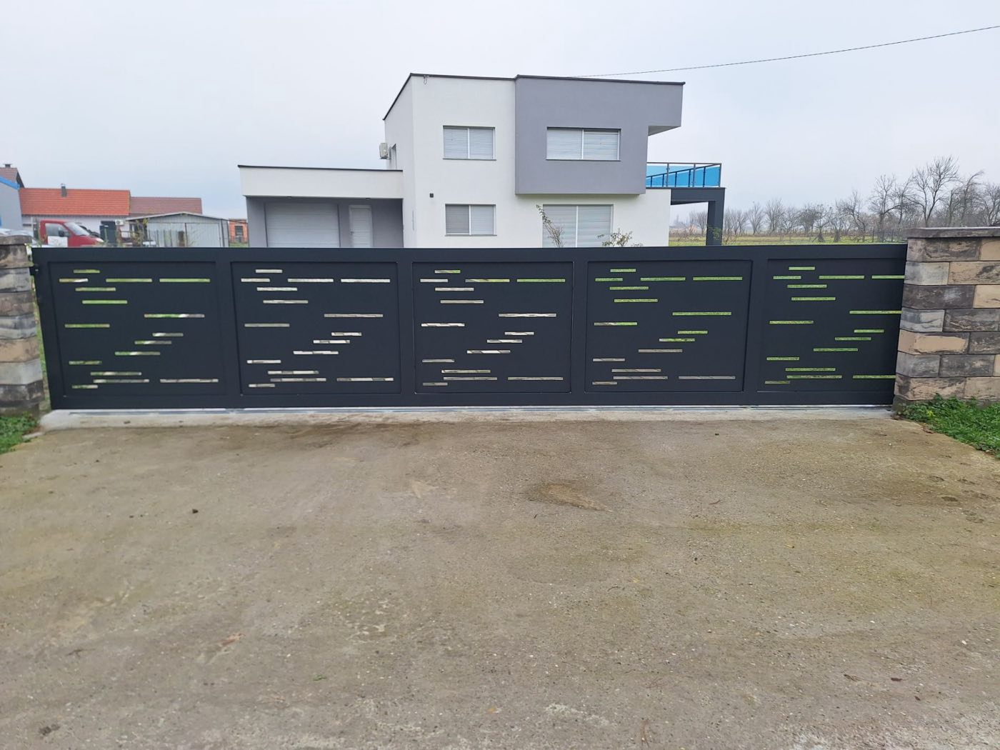
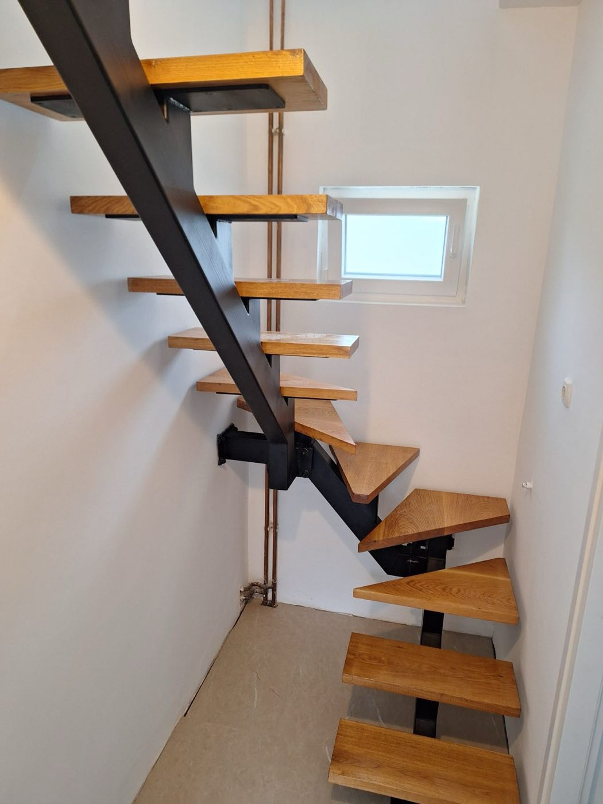
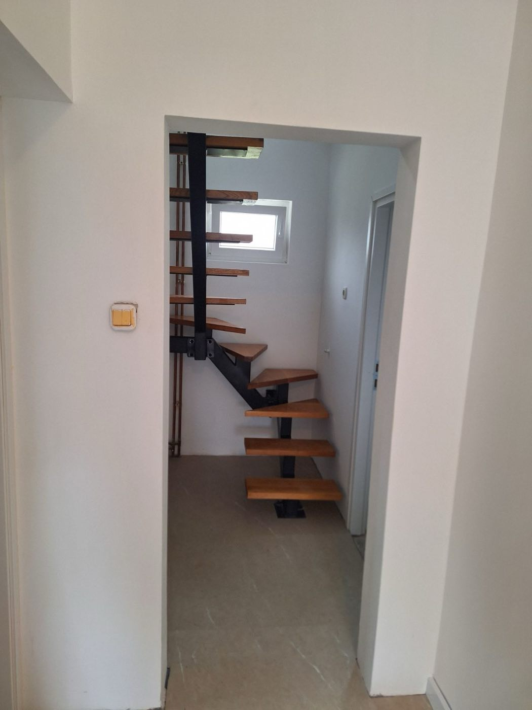
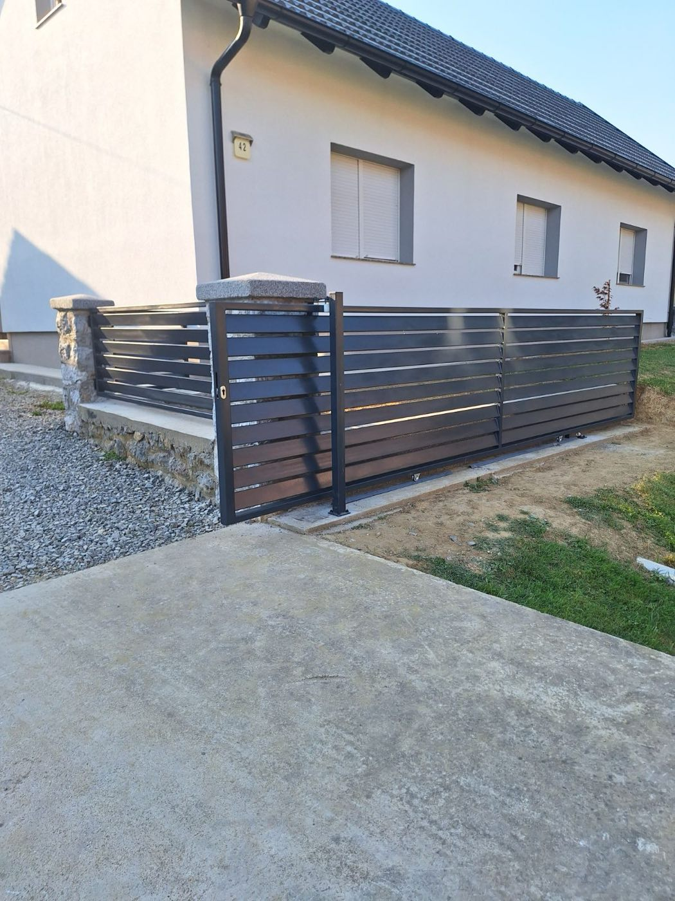
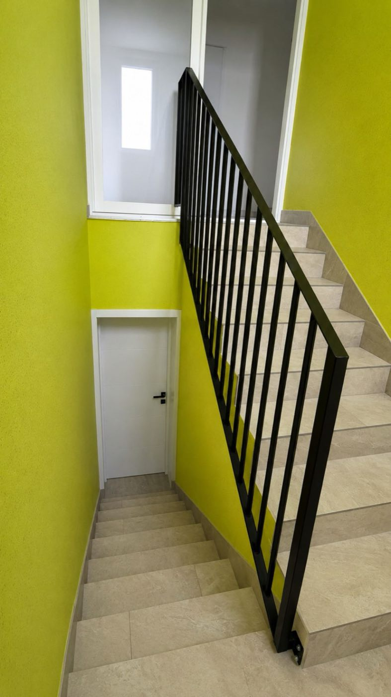
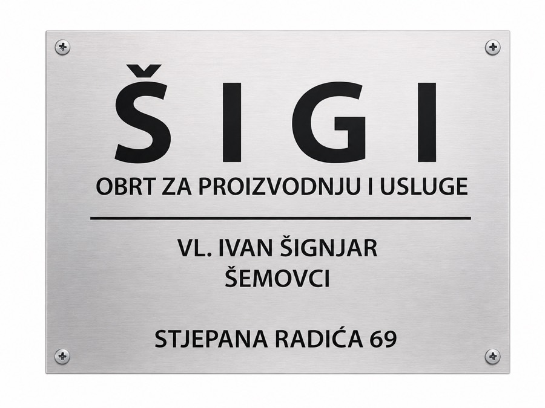

Vanjske stepenice
Stepenice s ogradom po želji
Vanjske metalne stepenice s rukohvatom i podestom, a ograda s kosim ispunama izrađena je prema želji vlasnika.


ŠIGI je obrt Ivana Šignjara iz Šemovaca. Izrađujemo i postavljamo alu i čelične ograde, metalne stepenice, nadstrešnice, dvorišna vrata i metalne konstrukcije – za kuću, dvorište i gospodarski objekt.

Proizvodnja dijelova od čelika, alu ograde, nadstrešnice i metalne konstrukcije – od izrade u radionici do postave na terenu.
Alu ograde, ograde od čelika (i kosi model), kovane ograde, panel ograde na parapetima, balkonske ograde i ograde na stepeništu.
Kapije i pješačka vrata usklađena s ogradom – i s laserski rezanim uzorkom po želji kupca.
Unutarnje stepenice s hrastovim gazištima i vanjske stepenice s rukohvatom i ogradom po želji.
Metalne nadstrešnice od čelika i pergole za terasu, ulaz ili parkirno mjesto.
Čelične konstrukcije i nadogradnje – na primjer nadogradnja prostora na šupi – te dijelovi od čelika po narudžbi.
Fotografije stvarnih poslova koje je obrt objavio na svom eMajstor profilu. Sve reference su na stranici Usluge i radovi.
Vanjske metalne stepenice s rukohvatom i podestom, a ograda s kosim ispunama izrađena je prema želji vlasnika.

Metalne stepenice sa središnjim nosačem i drvenim gazištima od hrasta, uklopljene u uski prostor hodnika.



Antracit ograda s kosim lamelama i dvorišna vrata u istom modelu. Isti model radimo i kao ogradu od čelika na podzidu.


Ocjene klijenata s eMajstor profila obrta, prenesene doslovno.
Ograda napravljena pedantno, sve prema dogovoru, ispoštovan rok i vrlo korektna cijena. Jako sam zadovoljna izvođačem, imaju moju preporuku za dalje.
Od dogovora, izvođenja radova do cijene, sve više nego korektno. Postavili 200 m panel ograde na betonskim parapetima.
Uvijek dostupan, savjeti i sve u roku.


ŠIGI, obrt za proizvodnju i usluge vodi Ivan Šignjar u Šemovcima, Stjepana Radića 69, u općini Virje. Obrt je registriran 2026. za proizvodnju gotovih proizvoda od metala.
Bavimo se proizvodnjom dijelova od čelika, alu ogradama, nadstrešnicama i metalnim konstrukcijama. Radimo u Koprivničko-križevačkoj, Bjelovarsko-bilogorskoj, Varaždinskoj, Virovitičko-podravskoj i Zagrebačkoj županiji te u Zagrebu.
Alu ograde, ograde od čelika, kovane i panel ograde, dvorišna vrata, metalne stepenice (i s drvenim gazištima), metalne nadstrešnice, pergole te metalne konstrukcije i dijelove od čelika.
Da. Među našim radovima su ograde na stepenicama po želji kupca, vanjske stepenice s ogradom po želji te alu profili s laserski rezanim uzorkom po želji kupca.
Obrt je u Šemovcima (općina Virje), a radimo u Koprivničko-križevačkoj, Bjelovarsko-bilogorskoj, Varaždinskoj, Virovitičko-podravskoj i Zagrebačkoj županiji te u Gradu Zagrebu.
Jedan od naših radova je postava panel ograde s parapetima bez temelja. Je li takvo rješenje prikladno za vaše dvorište, dogovaramo nakon što vidimo teren.
Pošaljite upit preko obrasca na ovoj stranici: navedite što trebate, mjesto i okvirne mjere, a ako možete, u e-mail dodajte i fotografiju.
Ograda, stepenice, nadstrešnica ili nešto po narudžbi – pošaljite upit i javit ćemo vam se.